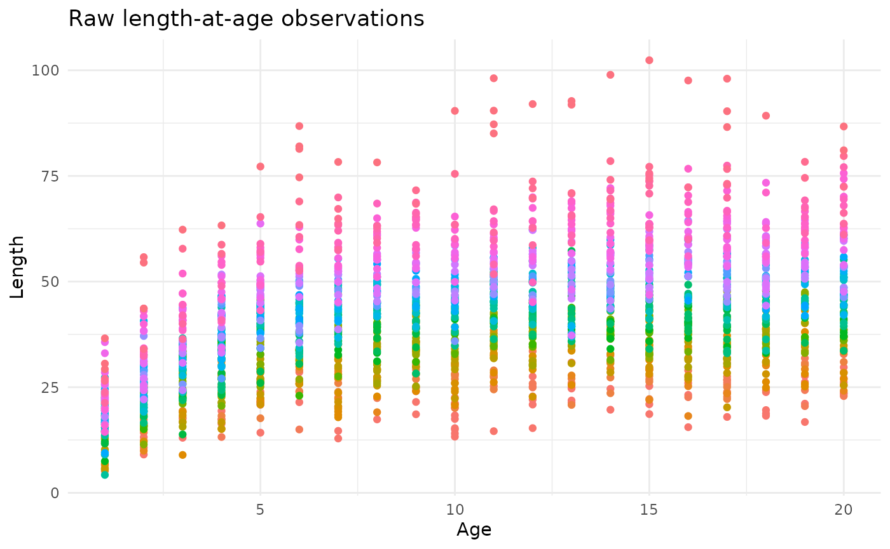
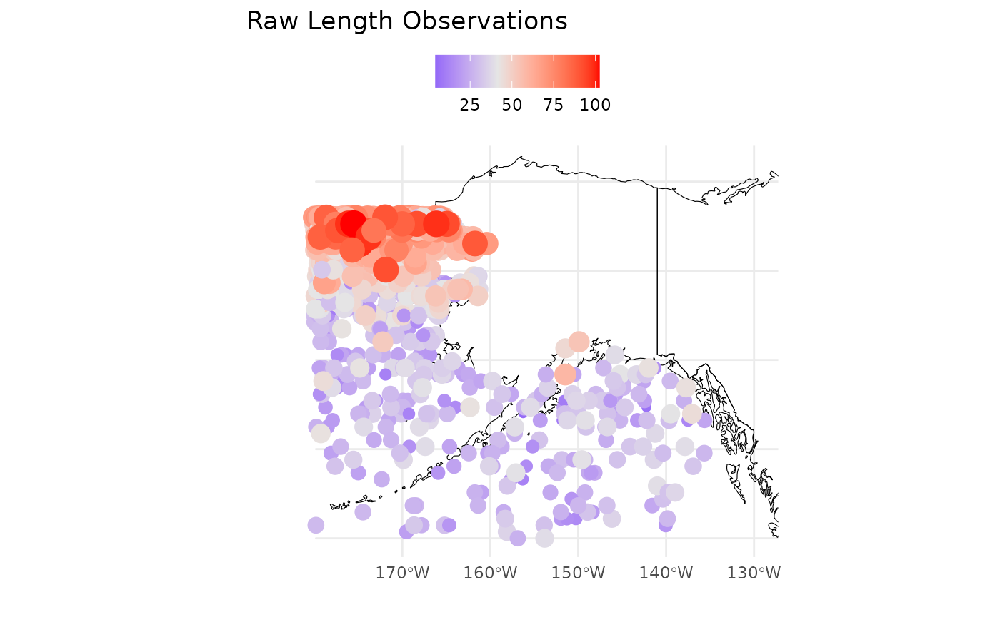
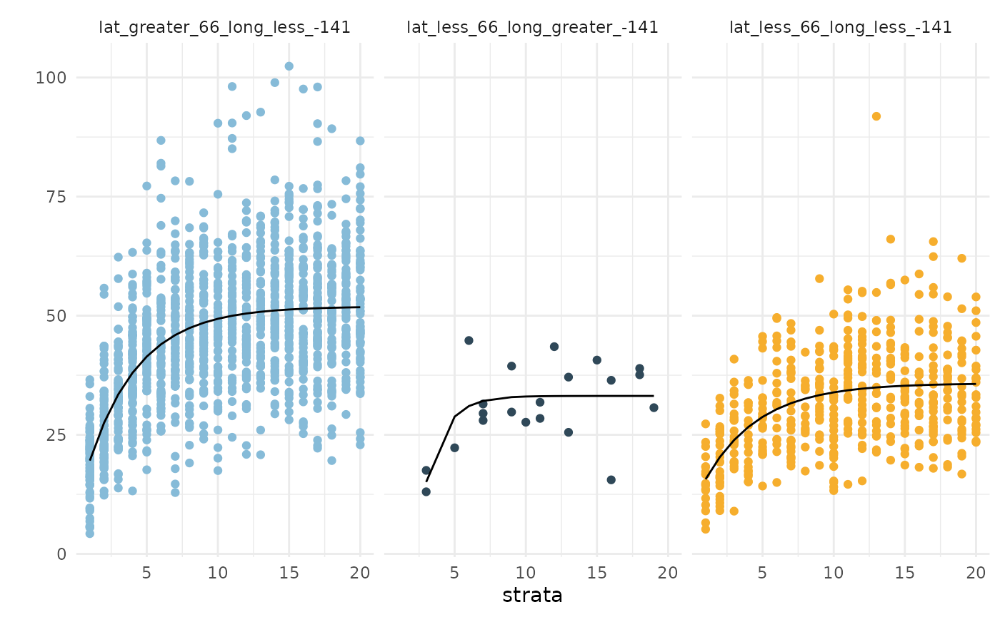
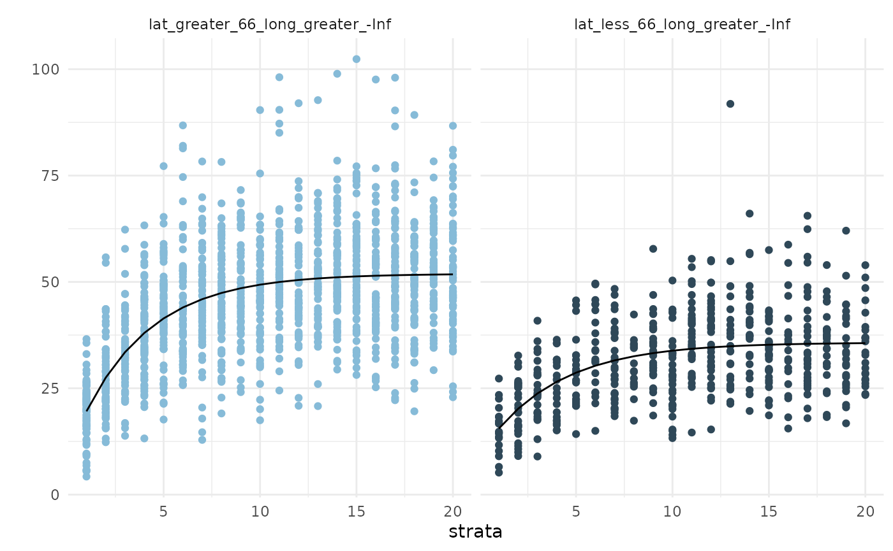

Getting Started
getting_started.Rmd
library(MASS)
library(purrr)
library(TMB)
library(dplyr)
library(ggplot2)
library(sf)
library(rnaturalearth)Loading & viewing your data
The example shown here will include a spatial process giving rise to heterogeneity in fish length-at-age with a predominant north-south cline.
The first step is to ensure your data are formatted correctly and to
be aware of any sample size issues. This is accomplished via
check_data(), which returns plots of the observations and
residuals.
library(growthbreaks)
data(simulated_data) ## from the package
head(simulated_data)
#> year age length lat long
#> 2 1 1 5.174880 56.97959 -156.2602
#> 3 1 1 6.532786 57.34694 -142.2419
#> 5 1 2 9.067383 56.61224 -151.8233
#> 7 1 2 13.178737 67.63265 -169.8984
#> 8 1 2 16.415712 55.14286 -169.2174
#> 9 1 2 19.372655 51.46939 -148.3869
p <- check_data(simulated_data, showPlot = FALSE)The first plot (p[[1]]) shows the input data, colored by
year:

The second two plots p[[2]];p[[3]] are maps of the
observations and simple residuals (observation minus age-specific mean).
The red colors are the highest values. We’d expect these to look fairly
similar to one another.

If you passed that step you are ready to investigate potential
breakpoints in length-at-age via get_Breaks(). This example
will use the default option axes = 0 which looks for
spatial breakpoints only. The function is ignorant of any underlying
structure in the data and is not fitting growth curves at this time. If
you keep the default settings you will get back plots of the
hypothesized breaks as well as a dataframe with the breakpoints.
Detecting Breakpoints
Now we can pass our data to get_Breaks().
The ages_to_use argument allows you to specify a subset
of your age observations for which you’d like to test for breakpoints.
If you are unsure, you may choose to use age(s) that are well sampled in
your data, or all ages. However, you will want to include at least some
observations of small (young) fish, since discrepancies in size may be
less obvious for fish at or near their asymptotic length. Here I am
testing three ages and saving the output to a dataframe called
breakpoints.
As we might have expected based on the raw observations, the
algorithm detected a break at about
N,
as well as an unexpected one at
W.
We can see this on the map as well as in the dataframe. The
count column indicates the proportion of tested ages for
which this breakpoint was detected (in this case, 1/3, suggesting that
no breakpoints were detected for 2/3 ages). You may choose to stop
here. If you’re interested in some of the automated checking and curve
fitting functionality, proceed to the next step.
breakpoints <- get_Breaks(dat = simulated_data,
ages_to_use = c(5,10,15),
sex = FALSE,
axes = 0,
showPlot = TRUE)#> 1 2 3 4 5 6 7 8
#> 36.88439 30.88424 35.42906 35.71281 31.86244 36.67859 33.34584 30.34416
#> 9 10 11 12 13 14 15 16
#> 33.39637 31.25914 30.08124 32.37758 29.50112 34.43475 49.93923 43.95080
#> 17 18 19 20 21 22 23 24
#> 42.06875 28.93220 37.50700 35.51265 46.37403 30.24302 31.82612 30.01603
#> 25 26 27 28 29 30 31 32
#> 31.99935 30.60416 52.48308 34.17074 47.97435 56.90494 36.91967 55.13941
#> 33 34 35 36 37 38 39 40
#> 33.15551 37.25825 38.48929 54.55386 46.04322 56.95636 55.11086 50.40115
#> 41 42 43 44 45 46 47 48
#> 40.31656 52.41264 50.43506 54.88874 41.89990 52.39267 57.49405 48.58846
#> 49 50 51 52 53 54 55 56
#> 43.53327 52.79453 57.20642 33.29396 36.12531 50.46321 50.58059 45.62144
#> 57 58 59 60 61 62 63 64
#> 54.79968 57.42592 52.74213 50.43788 55.14582 57.28701 54.92013 55.21262
#> 65 66 67 68 69 70 71 72
#> 54.96119 46.11377 56.98534 50.31108 48.03817 50.79978 55.03584 52.89397
#> 73 74 75 76 77 78 79 80
#> 57.18650 54.60366 47.97403 52.44731 57.41902 56.95628 52.54472 57.44881
#> 81 82 83 84 85 86 87 88
#> 47.92262 54.57247 54.75619 56.99781 54.80319 52.43211 57.33809 57.47543
#> 89 90 91 92 93 94 95 96
#> 57.55138 56.98799 57.15294 48.33780 48.51428 55.19922 54.88801 55.27030
#> 97 98 99 100 101 102
#> 57.38366 54.70155 54.62357 50.25179 57.09969 54.75339
breakpoints
#> lat long detected_break count
#> 87 65.63636 -141.4534 TRUE 0.3333333Re-fitting growth curves at putative breaks
The function refit_Growth() can be used to generate
plots of the growth parameters and associated curves by splitting your
data into the spatio/temporal zones (“strata”) defined by
breakpoints. This can allow you to make inferences about a)
the magnitude and significance of differences in individual parameters
and b) the resultant impact on our perception of length-at-age.
It is common for growth curves to be very similar especially when the number of strata is large (>3), so user judgment is required to discern the best use of the information provided here.
{r, echo = FALSE, include = TRUE, warning = FALSE} # # data(fits1);data(fits2) #
Then, run the function with the breakpoints as-is and inspect the outputs.
# fits1 <- refit_Growth(simulated_data, breakpoints, showPlot = FALSE)
names(fits1$split_tables) ## description of the strata used
#> [1] "lat_less_66_long_less_-141" "lat_greater_66_long_less_-141"
#> [3] "lat_less_66_long_greater_-141"
## split_tables contains your observed data broken up by strataWe can inspect the fitted curves in two ways: first, by visualizing
the $par_plot. The red points & error bars indicate
estimates for which the mean fell outside the confidence interval(s) for
other strata. This can be used to infer which components of the growth
curve are possibly contributing to detected differences among strata. It
doesn’t look like the second strata’s
nor
values are very different than the other regions’.
fits1$pars_plot
The second way to explore the results are by visualizing the fitted
curves against the strata-specific observations contained in
$fits_plot. Here we see that the second and third strata
(all data points below
)N
exhhibit very similar curves, and there are not many data points in the
second strata to begin with.
fits1$fits_plot
Updating and re-fitting the breakpoints
Based on the exploration above, you may decide to manually combine
the second and third strata. In this case, we would do away with the
breakpoint at
)W,
replacing it with -Inf:
breakpoints$long <- -Inf
# fits2 <- refit_Growth(simulated_data,
# breakpoints,
# showPlot = FALSE) ## refit the curvesWe can repeat the visualization and see that 1) the parameter values are now more distinct from one another and 2) so are the curves.
fits2$pars_plot
fits2$fits_plot